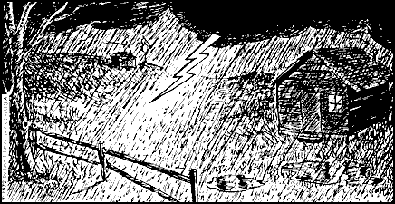
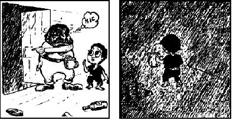
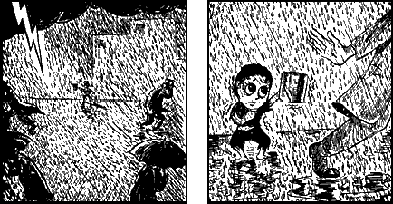
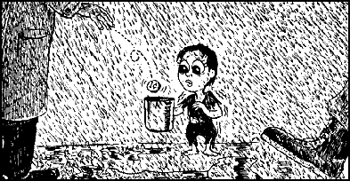
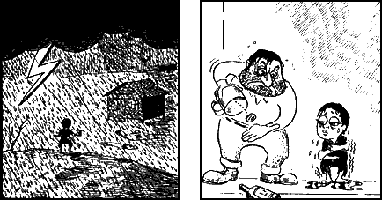
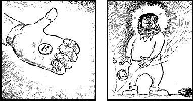
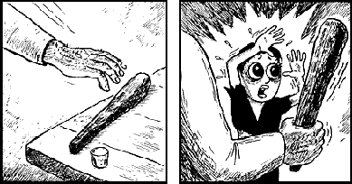
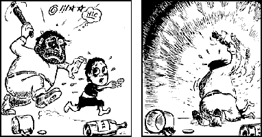
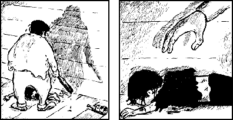
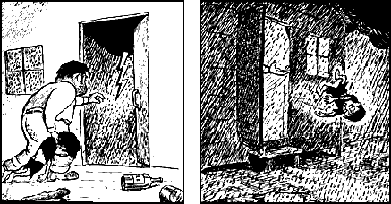
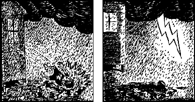
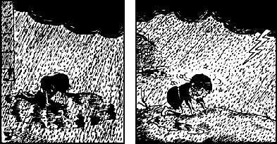
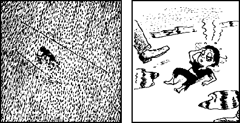

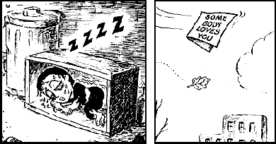
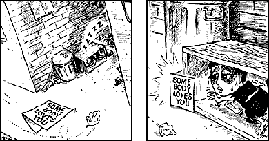
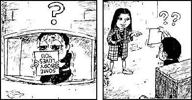
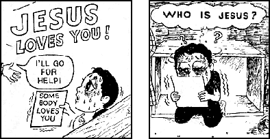
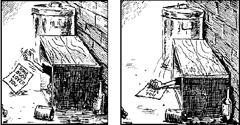
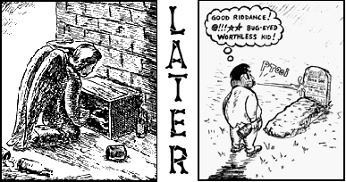
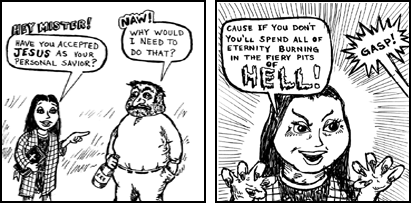
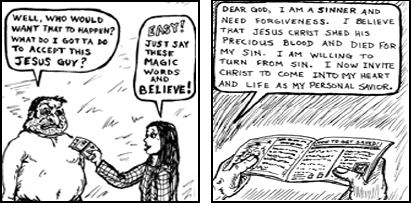
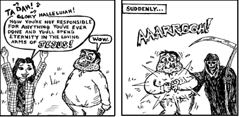
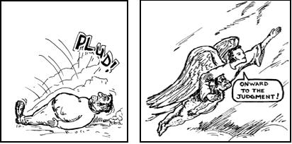
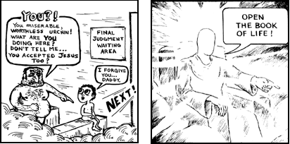
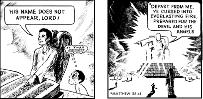
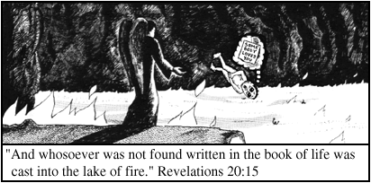
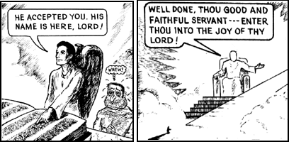
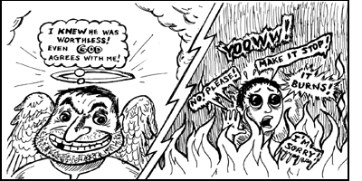
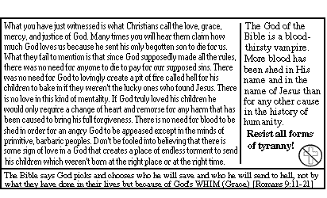
| 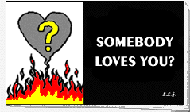 |
© 1995 by Luciferian Liberation Front |
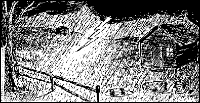
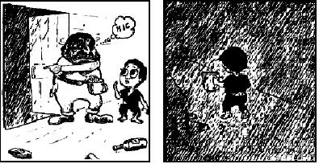
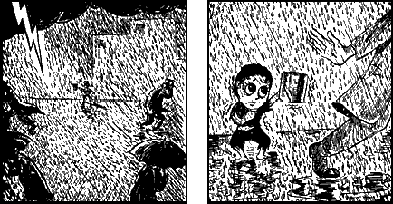
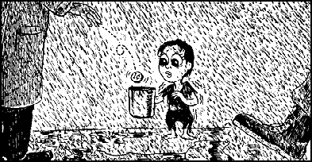
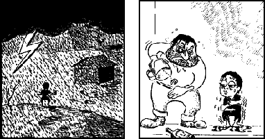
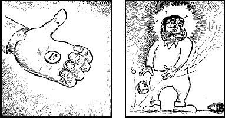
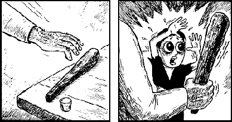
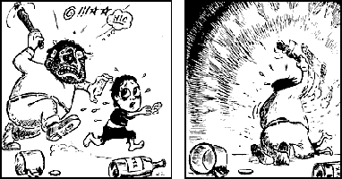
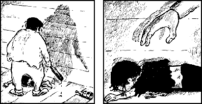
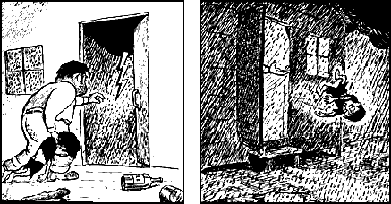
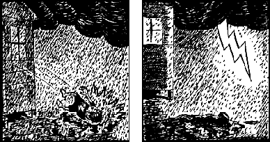
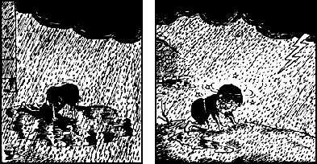
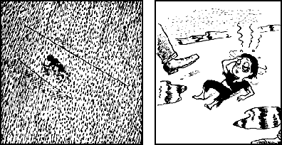
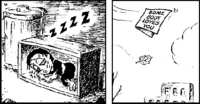
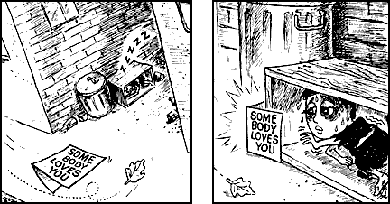
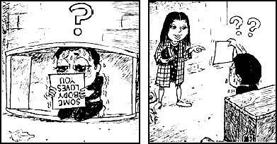
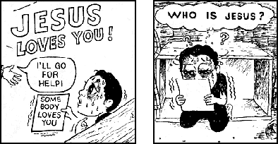
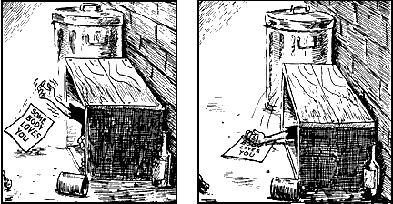
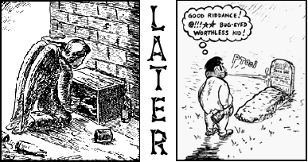
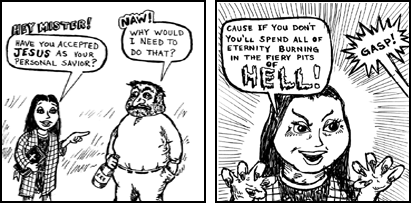
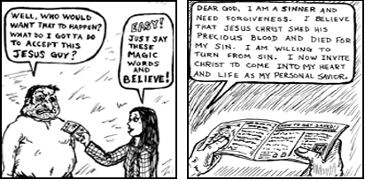
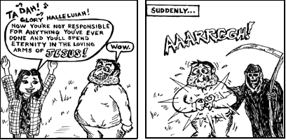
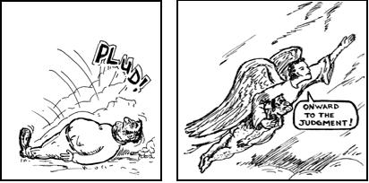
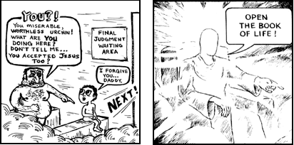
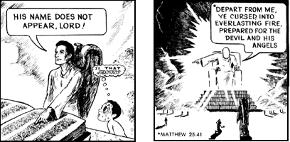
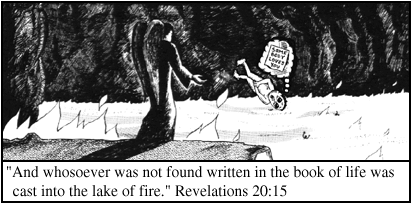
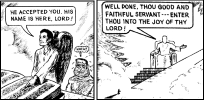
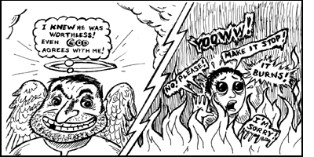
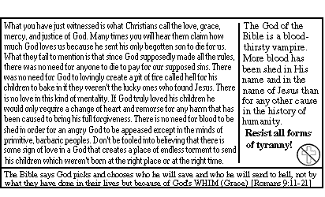

|
Millions of Fundamentalist Christians believe that what you have done in this life is unimportant as long as you believe that Jesus died for your sins. In their minds, billions of kind, loving humans are destined for an eternal barbecue while the most vile, cruel monsters in history will bask in the glow of God's love simply because they believed that Jesus would save them. Don't be fooled into thinking this kind of God loves you. Shake off the shackles of fear and ignorance and step into the light of reason. An AntiChrist Production from the Luciferian Liberation Front, People's Temple, Free Urantia. "Liberating the oppressed, one mind at a time." |